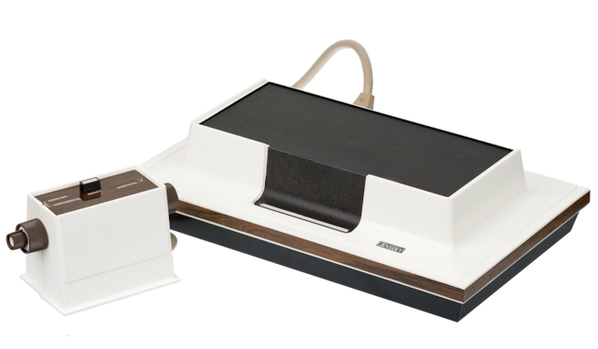
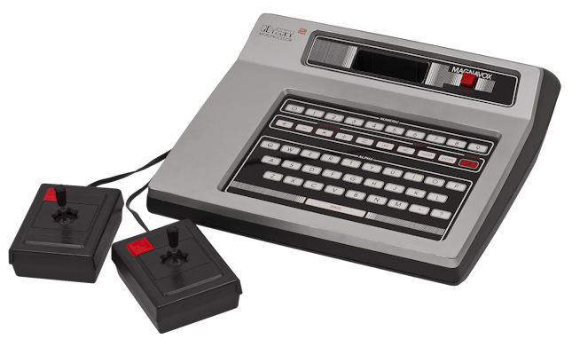

Magnavox Odyssey
La Magnavox Odyssey fue una videoconsola doméstica
desarrollada por Ralph Baer y comercializada por
Magnavox en septiembre de 1972. Está considerada
la primera videoconsola doméstica comercial de la
historia y supuso uno de los primeros pasos en la
llegada de los videojuegos a los hogares.
La consola no utilizaba cartuchos de videojuegos
ni generaba sonido. Sus juegos empleaban circuitos
internos y tarjetas de juego que configuraban
distintas experiencias. La imagen se componía de
elementos muy sencillos y algunos juegos incluían
láminas transparentes que se colocaban sobre la
pantalla del televisor.
Vendió aproximadamente 350.000 unidades.

Magnavox Odyssey²
La Magnavox Odyssey² fue una videoconsola de
segunda generación lanzada en Estados Unidos
en septiembre de 1978. Su principal diferencia
respecto a la Odyssey original era que permitía
utilizar cartuchos intercambiables, por lo que
cada juego podía ofrecer una experiencia distinta.
Una de sus características más llamativas era
su teclado alfanumérico de membrana integrado,
utilizado para seleccionar opciones y en algunos
juegos educativos. También disponía de mandos
con joystick y un botón de acción.
En Europa se comercializó principalmente como
Philips Videopac G7000. También tuvo variantes
regionales en otros mercados.
Vendió aproximadamente 2.000.000 de unidades.
